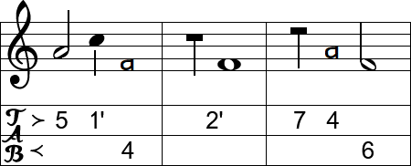

Tablature generation tool for diatonic accordion / melodeon and harmonica. The tunes are entered in ABC notation, tablature is created based on instrument selection.
Many ABC tunes are available on folktunefinder.com and thesession.org. More information about ABC notation can be found at abcnotation.com. You can choose the required instrument and tuning, one and two row melodeons with 3th button starts and harmonicas are supported. If the key of the input ABC does not match you instrument, use the transpose control, for example to transpose from G/C to C/F set this value to 5 (half steps).

Two row melodeons
There are some special layout options for two row melodeons. Buttons 1 and 1' can either be used for low notes or for accidentals. The push and pull notes of these buttons can be flipped. Same holds for 5', to configure the layout to use 'Dutch reversal'.
There are often multiple possibilities of playing the same tune. The algorithm tries to find the easiest way, but you might not agree with the result. The push/pull direction is derived from the bass chord (written in ABC notation between ""). For chords that can be played in both directions you can add annotations to overrule the direction. In addition, annotations can be added to force the melody row number.
Push/pull annotations
Example for G/C melodeon where the F chord can be played in both push and pull. > means push direction, write "F>" to set F chord to push. < means pull direction, write "F<" to set F chord to pull.
Row number annotations
Example for G/C melodeon where the a note can be played on both the outer and the inner row (both in pull). . means row 1 or outer row, write "F."a to play it with 11 in pull. : means row 2 or inner row, write "F:"a to play it with 9' in pull.